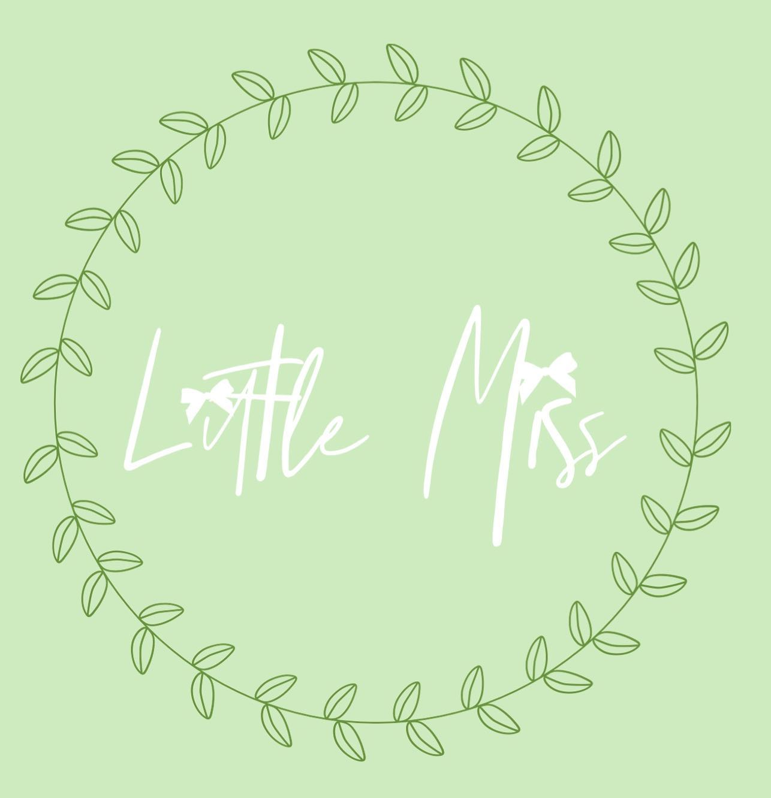

Contact Us
≡ Menu
Home
Order
Inventory
Reviews and Gallery
Seriously, Megan is the best! She always gets my bows here before I expect them.
-Ella M.
My girls always get compliments on their top knots and bows. I always recommend Little Miss Bowtique.
-Brittney Q.
One time Megan even let me pick out my own fabric. I brough it to her and BAM, custom bow.
-Delilah F.